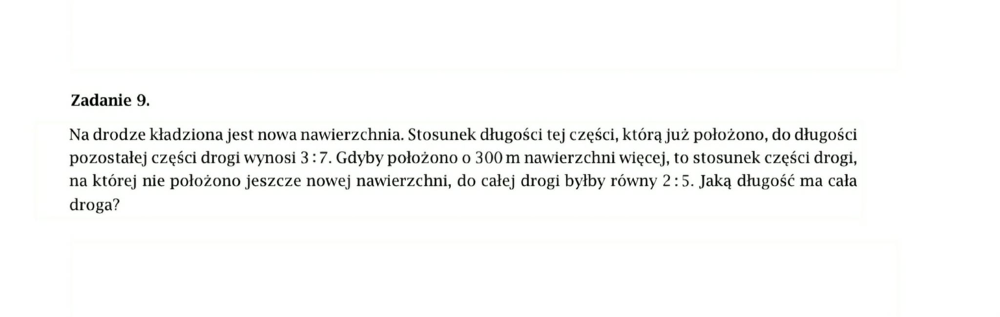
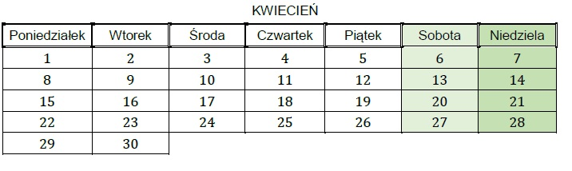

Czy \( 5 \) jest liczbą parzystą?
ponieważ
W urnie jest \( 5 \) kul bialych i \( 5 \) czarnych. Wybierz prawda/falsz.
1. Prawdopodobienstwo wylosowania bialej kuli jest wieksze niz prawdopodobienstwo wylosowania czarnej kuli.
2. Prawdopodobienstwo wylosowania bialej kuli nie zmieni sie, jesli z urny wyjmiemy jedna biala i jedna czarna kule.

Poniżej przedstawiono kalendarz na kwiecień w pewnym roku.

Uzupełnij zdania. Wybierz odpowiedź spośród oznaczonych literami A i B oraz odpowiedź spośród oznaczonych literami C i D.
Prawdopodobieństwo, że wybrany dzień tego miesiąca to wtorek, jest równe
rawdopodobieństwo, że numer wybranego dnia tego miesiąca będzie liczbą podzielną przez C\D jest równe \( \frac{2}{15} \)